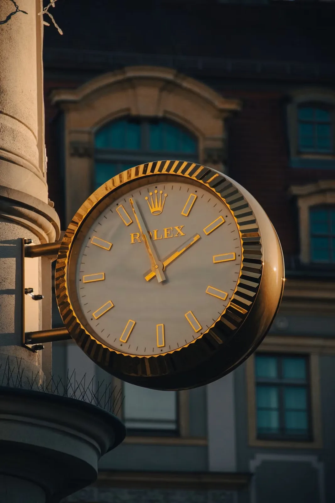

Rolex has planted a permanent marker in the heart of Midtown Manhattan. On 17 June 2026, the brand and Rockefeller Center announced a partnership that names Rolex the Exclusive Timepiece Partner of the landmark, and to mark it, a bespoke Rolex clock was unveiled above the famous Rockefeller Center rink, on 50th Street between Fifth and Sixth Avenues.
The timing is no accident. The announcement arrives as Rolex prepares to open its new North American headquarters and multi-level flagship a few blocks east, at 665 Fifth Avenue — the 30-storey tower by Sir David Chipperfield set to open this autumn. Read together, the two moves describe a brand putting down roots in New York with unusual deliberateness: one address for the work, another for the public landmark.
This is more than a ceremonial gesture. Under the partnership, Rolex and Rockefeller Center have committed to recurring events and cultural programming, the kind of long-horizon arrangement that positions Fifth Avenue and its surroundings ever more firmly as a destination for luxury and craft. The clock is the visible anchor of that commitment — and, the partners intend, a permanent one.
A Clock Built in the Language of the Crown
What makes the installation worth a watch enthusiast's attention is not that Rolex put its name on a clock — boutiques and stations have carried Rolex clocks for generations — but how carefully this one is composed. Conceived in sympathy with Rockefeller Center's 1930s Art Deco architecture, the clock is built almost entirely from Rolex's own visual grammar.
Its five supporting pillars echo the five points of the Rolex crown and the five links of the Jubilee bracelet. The raised fluting around the clock — the detail that gives it that immediately recognisable texture — is a direct nod to the fluted bezel Rolex introduced in 1926 alongside the Oyster, the world's first waterproof wristwatch. At the centre, the fluting intersects to mark the four cardinal points. The dial itself is built for the street: clean markers, strong contrast, hands shaped for legibility at a distance.
We are honoured to partner with a brand of Rolex's stature, and we look forward to seeing the clock become a new emblem for New York.
EB Kelly · Senior Managing Director, Tishman Speyer · Head of Rockefeller CenterWhy 1926 Matters Here
That fluted-bezel reference is the detail that ties the whole gesture together, because 1926 is the year Rolex is celebrating across its entire 2026 collection. This is the centenary of the Oyster case — the waterproof architecture that effectively defined the modern Rolex sports watch — and the brand's new releases this year lean almost uniformly on that anniversary. Placing a permanent, Oyster-referencing clock in one of the most photographed public spaces in America, in the same year, is a piece of institutional self-reference that is anything but incidental.
Drawn to that fluted bezel yourself? Find a Rolex from verified dealers worldwide →
There is a neatness to the placement that goes beyond marketing. The clock sits atop a newly designed information centre, where visitors can buy tickets for Rockefeller Center experiences — including the Top of the Rock observation deck — and find their way to the dining, retail and entertainment spread across the campus. It is, in other words, a working object in a working place, not a billboard. For a brand that has always chosen its settings with care, sitting permanently inside another long-lived institution is a precise kind of statement.
The Bigger Picture: Rolex's New York Moment
Step back, and the clock is one beat in a larger rhythm. The 665 Fifth Avenue tower — inspired, fittingly, by the fluted bezel — will bring a four-floor Rolex retail space to the avenue when it opens this autumn, replacing the building the brand had occupied since the 1970s. A permanent clock at Rockefeller Center, an exclusive partnership with the landmark that owns it, and a new flagship a short walk away: taken together, they amount to the most visible expansion of Rolex's physical presence in New York in half a century.
For collectors and enthusiasts, the practical upshot is simple. New York is consolidating its position as one of the essential cities in which to encounter — and, soon, to buy — a Rolex in person. When the Fifth Avenue flagship opens, it will join an already deep field of authorised and pre-owned sources across the city, and the clock will be standing a few blocks away, keeping time over the rink.
Watch Finder
Find Rolex sources across New York and worldwide
Authorised dealers · Grey market · Auction houses · Online platforms